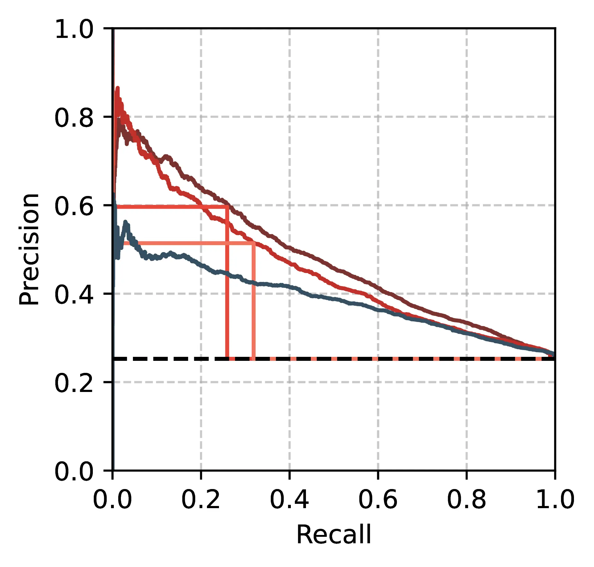
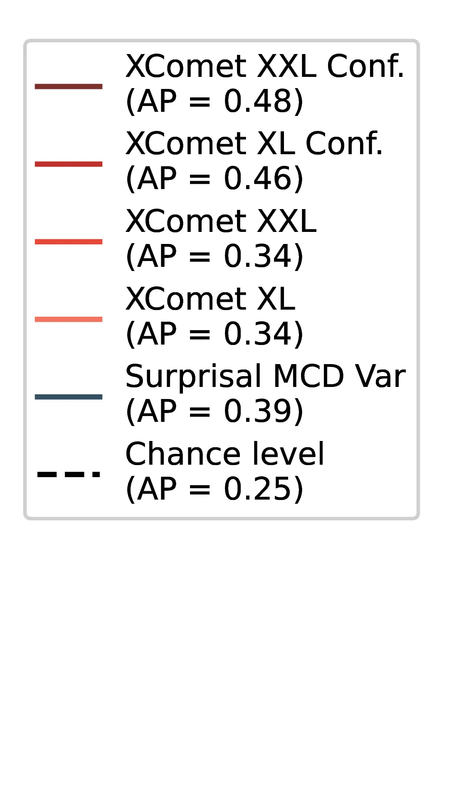

10 Unsupervised MT Error Detection and Human Disagreement
So, you see, translators do not so much deliver a message as they rewrite the original. And herein lies the difficulty—rewriting is still writing, and writing always reflects the authors ideology and biases.
– Rebecca F. Kuang, Babel (2022)
10.1 Introduction
Word-level error spans are widely used in machine translation evaluation to obtain robust and fine-grained estimates of translation quality (Lommel et al., 2013; Freitag et al., 2021a; Freitag et al., 2021b; Kocmi et al., 2024b). Due to the cost of manual annotation, word-level quality estimation (WQE) was proposed for assisting in annotating error spans over MT outputs (Zouhar et al., 2025). Modern WQE approaches generally rely on costly inference with large language models or ad-hoc training with large amounts of human-annotated texts (Fernandes et al., 2023; Kocmi and Federmann, 2023; Guerreiro et al., 2024), making them impractical for less resourced settings (Zouhar et al., 2024).
To improve the efficiency of MT quality assessment, several works explored the use of signals derived from the internals of neural MT systems (Fomicheva et al., 2020; Fomicheva et al., 2021; Leiter et al., 2024), for identifying problems in MT outputs, such as hallucinations (Guerreiro et al., 2023a; Guerreiro et al., 2023b; Dale et al., 2023a; Dale et al., 2023b; Himmi et al., 2024). However, previous works have focused on sentence-level metrics for overall translation quality and do not evaluate performance on multiple label sets due to high annotation costs (Fomicheva et al., 2022; Zerva et al., 2024).
In this chapter, we conduct a more comprehensive evaluation spanning 10 unsupervised metrics derived from models’ inner representations and predictive distributions to identify translation errors at the word level. We test three open-source multilingual MT models and LLMs of varying sizes across 12 translation directions, including typologically diverse languages and challenging textual domains. Importantly, we focus on texts with multiple human annotations to measure the impact of individual annotator preferences on metric performance, setting a “human-level” baseline for the WQE task.
We address the following research questions:
How accurate are unsupervised WQE metrics in detecting MT errors compared to trained metrics and human annotators?
Are popular supervised WQE metrics well-calibrated?
Are the relative performances of WQE metrics affected by the variability in human error annotations?
We conclude with recommendations for improving the evaluation and usage of future WQE systems.
10.3 Models and Datasets
We use datasets containing error annotations or post-edits on the outputs of open-source models to extract unsupervised WQE metrics using real model outputs, thereby avoiding potential confounders. We select the following datasets, summarized in Table 10.1:
DivEMT We reuse the DivEMT dataset, introduced in Chapter 8, including out-of-English machine translations towards six typologically diverse target languages (English\(\rightarrow\)Arabic,Italian,Dutch,Turkish,Ukrainian,Vietnamese) produced by Google Translate and mBART-50 1-to-many for a subset of Wiki texts from the FLORES dataset (Goyal et al., 2022), with edits made by professional translators. In this study, we evaluate unsupervised metrics on the mBART-50 1-to-many model, converting the human post-edits into token-level labels to perform a cross-lingual comparison over a fixed set of examples.
WMT24 The WMT24 dataset is taken from the General Machine Translation Shared Task at WMT 2024 (Kocmi et al., 2024a). It contains evaluation of several machine translation systems across English\(\rightarrow\){Czech, Hindi, Japanese, Chinese, Russian} (634 segments per language) and Czech\(\rightarrow\)Ukrainian (1954 segments). The human evaluation was conducted using the Error Span Annotation protocol (ESA, Kocmi et al. (2024b)), which involves human annotators highlighting erroneous spans in the translation and marking them as either minor or major errors. This dataset covers the news, social, and speech (with automatic speech recognition) domains. We adopt the official prompting setup from the WMT24 campaign, using the Aya23 model alongside the provided prompt and three in-context translation examples per language to ensure uniformity with previous results.2 Aya23 is a large language model introduced by Aryabumi et al. (2024) to improve the multilingual capabilities of the original Aya model (Üstün et al., 2024) on a selected set of 23 languages. The model was included in the WMT24 evaluation by Kocmi et al. (2024a), resulting in the best translation performance among the tested open-source models. The model is a decoder-only transformer model with 40 layers, a model dimension of 8196 and 64 attention heads per layer. Using WMT24 allows us to extend our evaluation to a state-of-the-art LLM, given the popularity of such systems in MT (Kocmi et al., 2023).
QE4PE The QE4PE dataset, introduced in Chapter 9, was created to measure the effect of word-level error highlights when included in real-world human post-editing workflows. The QE4PE data provides granular behavioral metrics to evaluate the speed and quality of post-editing of 12 annotators for En\(\rightarrow\)It and En\(\rightarrow\)Nl across two challenging textual domains (social posts and biomedical abstracts) and four error span highlighting modalities, including the unsupervised Surprisal MCDvar method and the supervised xcomet-xxl we also test in this study. Provided that the presence of error span highlights was found to influence the editing choices of human editors, we limit our evaluation to the six human annotators per language that post-edited sentences without any highlights (3 for the Oracle Post-edit task to produce initial human-based highlights, and 3 for the No Highlight modality in the main task). This prevents us from biasing our evaluation of WQE metrics in favor of the metrics that influenced editing choices. As for DivEMT, we use the post-edits over translations—in this case, those of the NLLB 3.3B model (NLLB Team et al., 2024)—to produce token-level error spans, enabling an evaluation of WQE metrics across multiple annotation sets.
| DivEMT | WMT24 | QE4PE | |
|---|---|---|---|
| Languages | en→ar,it, nl,tr,uk,vi | en→ja,zh,hi,cs,ru cs→uk | en→it,nl |
| Errors type | Post-edit | Annotation | Post-edit |
| Label sets | 1 | 1 | 6 |
| Domains | Wiki | Multiple | Social, Biomed |
| MT Model | mBART-50 | Aya23 | NLLB |
| # Segments | 2580 | 5124 | 3888 |
10.4 Evaluated Metrics
The following metrics were evaluated using the Inseq library introduced in Chapter 3.
Predictive Distribution Metrics We use the Surprisal of the predicted token \(t^{*}\), as negative log-probability \(-\log p(t^{*}_i|t_{<i})\), and the Entropy \(H\) of the output distribution \(P_N\) over vocabulary \(\mathcal{V}\), \(-\sum_{i=1}^{|\mathcal{V}|} p(t_i|t_{<i}) \log_2 p(t_i|t_{<i})\), as simple metrics to quantify pointwise and full prediction uncertainty (Fomicheva et al., 2020). For surprisal, we also compute its expectation (MCD\(_\text{avg}\)) and variance (MCD\(_\text{var}\)) with \(n=10\) steps of Monte Carlo Dropout (MCD, Gal and Ghahramani, 2016) to obtain a robust estimate and a measure of epistemic uncertainty in predictions, respectively. Intuitively, epistemic uncertainty reflects models’ lack of knowledge rather than data ambiguity.3 We employ the mean of the negative log probabilities as a robust estimate of surprisal:
\[\text{Surprisal MCD}_{\text{avg}} = \hat y_{\text{MCD}} = \frac{1}{T} \sum_{t=1}^{T} - \log p(x | \Theta_t)\]
Moreover, we estimate predictive uncertainty by calculating the variance of predictive probabilities under the same setup:
\[\text{Surprisal MCD}_{\text{var}} = \frac{1}{T} \sum_{t=1}^{T} \big(- \log p(x | \Theta_t) - \hat y_{\text{MCD}} \big)\]
Vocabulary Projections We use the Logit Lens method (LL, nostalgebraist, 2020), introduced in Section 2.1.3, to extract probability distributions \(P_0, \dots, P_{N-1}\) over \(V\) from intermediate activations at every layer \(l_0, \dots, l_{N-1}\) of the decoder. We use the surprisal for the final prediction at every layer (LL-Surprisal) to assess the presence of layers with high sensitivity to incorrect predictions. For the NLLB and mBART-50 models, we also apply a final layer normalization before the projection, following the model architecture. For the Aya model, we instead scale logits by \(0.0625\) (the default logit_scale defined in the model configuration). Following the residual stream view of the transformer model (Elhage et al., 2021), the resulting logits offer insight into the model’s predictive confidence at that specific depth of processing. Then, we compute the KL divergence between every layer distribution and the final distribution \(P_N\), e.g. \(\text{KL}(P_{N-1}\|P_N)\), to highlight trends in the shift in predictive probability produced by the application of remaining layers (LL KL-Div). Finally, we adapt the approach of Baldock et al. (2021) and use the number of the first layer for which the final prediction corresponds to the top logit as a metric of model confidence, \(l \;\text{s.t.}\;\arg \max P_l = t^{*}\) and \(\arg \max P_i \neq t^{*} \;\forall i<l\) (LL Pred. Depth).
Context mixing We employ simple estimates of context relevance using attention weights produced during the transformer attention operation. More specifically, for every attention head at every layer of the decoder module, we extract a score for every token in the preceding context. We then use the entropy of the distribution of attention weights4 over previous context as a simple measure of information locality during inference (Ferrando et al., 2022; Mohebbi et al., 2023). Following Fomicheva et al. (2020), we experiment with using the mean and the maximum entropy across all attention heads of all layers as separate metrics (Attn. Entropyavg/max). Finally, we evaluate the Between Layer OOD method by Jelenić et al. (2024), employing gradients to estimate layer transformation smoothness for OOD detection (BLOOD).
Supervised baselines We also test the state-of-the-art supervised WQE model xcomet (Guerreiro et al., 2024), introduced in Section 2.6. In this chapter, we focus on their word-level error span prediction capabilities in a quality estimation setup, where the model classifies every input token according to MQM severity levels {ok, minor, major, critical} with a learned linear layer.5 Contrary to the continuous metrics from the previous section, binary labels from xcomet cannot be easily calibrated to match subjective annotation propensity. Hence, we propose to adapt the xcomet metric to use the sum of probability for all error types as a token-level continuous confidence metric, \(s(t^{*}) = p(\text{minor}) + p(\text{major}) + p(\text{critical})\), which we dub xcometconf.
Human Editors For QE4PE, we report the min/mean/max agreement between each annotator’s edited spans and those of the other five editors as a less subjective “human-level” quality measure.
10.5 Experiments
10.5.1 Setup
Token-level Evaluation Error spans used as labels in our evaluation are defined at the character level, while metric scores depend on the tokenization employed by either the MT model (for unsupervised metrics) or xcomet (for supervised metrics). To facilitate comparison, we label tokens as part of an error span if at least one character contained within them was marked as an error or edited by an annotator. Table 10.2 and Table 10.3 provide examples of various segmentations for the same MT output.
Hover highlighted spans to see error annotations.
| Sourceen | So why is it that people jump through extra hoops to install Google Maps? |
| MTit (NLLB) | Quindi perché le persone devono fare un salto in più per installare Google Maps? |
| Annotator \(t1\) | Quindi perché le persone devono fare un passaggio in più per installare Google Maps? |
| Annotator \(t2\) | Quindi perché le persone fanno i salti mortali per installare Google Maps? |
| Annotator \(t3\) | Quindi perché le persone effettuano dei passaggi ulteriori e superflui per installare Google Maps? |
| Annotator \(t4\) | Allora perché le persone fanno un passaggio in più per installare Google Maps? |
| Annotator \(t5\) | E allora mi chiedo: perché gli utenti iPhone si affannano tanto per installare Google Maps? |
| Annotator \(t6\) | Quindi perché le persone fanno di tutto per installare Google Maps? |
| Edit Counts (Figure 10.3) | Quindi perché le persone devono fare un salto in più per installare Google Maps? |
| xcomet-xl | Quindi perché le persone devono fare un salto in più per installare Google Maps? |
| xcomet-xxl | Quindi perché le persone devono fare un salto in più per installare Google Maps? |
| xcomet-xl\(_{\text{conf}}\) | Quindi perché le persone devono fare un salto in più per install are Google Maps ? |
| xcomet-xxl\(_{\text{conf}}\) | Quindi perché le persone devono fare un salto in più per install are Google Maps ? |
| Surprisal MCD\(_{\text{var}}\) | Quindi perché le persone devono fare un sal to in più per installare Google Maps ? |
Hover highlighted spans to see error annotations.
| Sourceen | So the challenges in this are already showing themselves. I'm likely going to have a VERY difficult time getting a medical clearance due to the FAA's stance on certain medications. |
| MTcs (Aya23) | Takže problémy s tím se již projevují. Pravděpodobně budu mít PŘESNĚ obtížný čas dostat lékařské potvrzení kvůli postoji FAA k některým lékům. |
| Annotator | Takže problémy s tím se již projevují. Pravděpodobně budu mít PŘESNĚ obtížný čas dostat lékařské potvrzení kvůli postoji FAA k některým lékům. |
| xcomet-xl | Takže problémy s tím se již projevují. Pravděpodobně budu mít PŘESNĚ obtížný čas dostat lékařské potvrzení kvůli postoji FAA k některým lékům |
| xcomet-xxl | Takže problémy s tím se již projevují. Pravděpodobně budu mít PŘESNĚ obtížný čas dostat lékařské potvrzení kvůli postoji FAA k některým lékům. |
| xcomet-xl\(_{\text{conf}}\) | Takže problémy s tím se již projevují . Pravděpodobně budu mít PŘESNĚ obtížný čas dostat lékařské potvrzení kvůli postoji FAA k některým lékům . |
| xcomet-xxl\(_{\text{conf}}\) | Takže problémy s tím se již projevují . Pravděpodobně budu PŘESNĚ obtížný čas dostat lékařské potvrzení kvůli postoji FAA k některým lékům . |
| Out. Entropy | Takže problémy s tím se již projevují . Pravděpodobně budu mít PŘESNĚ obtížný čas dostat lékařské potvrzení kvůli postoji FAA k některým lékům . |
Constraining generation Evaluating metrics at the word level can be challenging due to the need for perfect uniformity between model generations and annotated spans. For this reason, we extract unsupervised metrics during generation while force-decoding the annotated outputs from the MT model to ensure perfect adherence with annotated error spans. In general, such an approach could introduce a problematic confounder in the evaluation, as observed results may be the product of constraining a model towards an unnatural generation, rather than reflecting the underlying phenomena. However, in this study, we carefully ensure that the generation setup matches exactly the one of previous works where the annotated translations were produced, using the same MT model and the same inputs.6 Hence, the constraining process serves as a simple assurance of conformity in light of potential discrepancies introduced by different decoding strategies, and does not affect the soundness of our method.
10.5.2 Results
How Accurate are Unsupervised WQE Metrics? Table 10.4 reports the average metrics performance across all translation directions across tested datasets.7 We report Average Precision (AP) as a general measure of metric quality across the full score range, and we estimate calibrated metric performance as the best F1 score (F1*) across all thresholds for binarizing continuous metric scores into pos./neg. labels matching human annotation.8 Our results show that, despite high variability in error span prevalence across different models, languages and annotators, metric rankings remain generally consistent, suggesting the presence of robust relations between various signals sourced from models’ inner workings and translation errors.
| Method | DivEMT | WMT24 | QE4PE | ||||
|---|---|---|---|---|---|---|---|
| AP | F1\(^{*}\) | AP | F1\(^{*}\) | AP | F1\(^{*}\) | ||
| Random | .34 | .50 | .05 | .09 | .17 | .27 | |
| unsupervised | Surprisal | .43 | .53 | .08 | .13 | .23 | .32 |
| Out. Entropy | .46 | .51 | .10 | .16 | .23 | .31 | |
| Surprisal mcd\(_{\text{avg}}\) | .43 | .53 | - | - | .24 | .33 | |
| Surprisal mcd\(_{\text{var}}\) | .47 | .54 | - | - | .26 | .34 | |
| LL Surprisal\(_{\text{best}}\) | .42 | .53 | .09 | .15 | .23 | .32 | |
| LL KL-Div\(_{\text{best}}\) | .43 | .51 | .07 | .12 | .20 | .29 | |
| LL Pred. Depth | .39 | .51 | .06 | .12 | .20 | .29 | |
| Att. Entropy\(_{\text{avg}}\) | .37 | .50 | .05 | .09 | .18 | .28 | |
| Att. Entropy\(_{\text{max}}\) | .34 | .50 | .05 | .09 | .16 | .28 | |
| blood\(_{\text{best}}\) | .34 | .50 | - | - | .17 | .28 | |
| supervised | xcomet-xl | .42 | .45 | .09 | .19 | .23 | .34 |
| xcomet-xl\(_{\text{conf}}\) | .54 | .55 | .15 | .23 | .32 | .37 | |
| xcomet-xxl | .43 | .41 | .09 | .20 | .22 | .31 | |
| xcomet-xxl\(_{\text{conf}}\) | .56 | .55 | .16 | .24 | .33 | .37 | |
| human | Hum. Editors\(_{\text{min}}\) | - | - | - | - | .24 | .34 |
| Hum. Editors\(_{\text{avg}}\) | - | - | - | - | .28 | .41 | |
| Hum. Editors\(_{\text{max}}\) | - | - | - | - | .32 | .47 | |
Among unsupervised metrics, we find those based on the output distribution to be most effective at identifying error spans, in line with previous segment-level QE results (Fomicheva et al., 2020). Notably, the Surprisal MCDvar shows strong performances in line with the default xcomet models. For the multi-label QE4PE dataset, we find that the best supervised metrics score on par with the average human annotator consensus (Hum. Editorsavg), while unsupervised metrics generally obtain lower performances.
Confidence Weighting Enables xcomet Calibration From Table 10.4 results, default xcomet metrics underperform compared to the best unsupervised techniques, a surprising result given their ad-hoc tuning. On the contrary, simple continuous scores derived from xcomet (xcometconf) consistently reach better results across all tested sets. Figure 10.2 shows the precision-recall tradeoff for these metrics on the EN\(\rightarrow\)IT subset of the DivEMT dataset.9 In their default form, commonly used for evaluation via the unbabel-comet library, xcomet metrics consistently outperform Surprisal MCDvar in terms of precision (51-60%, compared to 34% optimal precision for MCDvar), but identify only 32-26% of tokens annotated as errors, resulting in lower AP.


The low recall of these metrics may be problematic in WQE applications, where omitting an error could result in oversights by human post-editors, who may trust the comprehensiveness of WQE predictions. On the contrary, the confidence-weighted xcometconf shows strong performances across the whole recall range, resulting in consistent improvements in both F1* and AP Table 10.4. Concretely, these results confirm that default xcomet performance does not reflect the full capacity of the metric, and operating with granular confidence scores can be beneficial when calibration is possible.
Metrics Performance for Multiple Annotations While our evaluation so far employed human error span annotations as binary labels, we set out to assess how more granular labeling schemes impact metrics’ performance. Given \(L\) sets of binary labels (up to 6 per language for QE4PE), we assign a score \(s \in \{1,\dots,L\}\) to every MT token using the number of annotators that marked it as an error, resulting in edit counts reflecting human agreement rate, as shown in Table 10.2.
Figure 10.3 presents the correlation of various metrics as the number of annotators available increases, with median values and confidence bounds obtained from edit counts across all combinations of \(L\) label sets.10 The increasing trend in correlations across all reported metrics indicates that these methods effectively reflect the aleatoric uncertainty in error span labels, i.e., the disagreement between various annotators. In particular, the Surprisal MCDvar metric sees a steeper correlation increase than other well-performing metrics, surpassing default xcomet supervised approaches for higher correlation bins. This suggests the epistemic uncertainty derived from noisy model predictions might be a promising way to anticipate the aleatoric uncertainty across human annotators for WQE. We observe that 95% confidence intervals for high-scoring metrics largely overlap when a single set of labels is used, indicating that rankings of metric performance are subject to change depending on the subjective choices of the annotator. While this poses a problem when attempting a robust evaluation of WQE metrics, we remark that including multiple annotations largely mitigates this issue. As a result, we recommend explicitly accounting for human label variation by including multiple error annotations in future WQE evaluations to ensure generalizable findings.
10.6 Limitations
Our findings are accompanied by several limitations. Firstly, our choice of tested datasets was limited by the availability of annotated outputs generated by open-source MT models. While several other datasets matching these criteria exist (Fomicheva et al., 2022; Yang et al., 2023; Dale et al., 2023b), we restricted our assessment to a sufficient subset to ensure diversity across languages and tested models to support our findings. To facilitate comparison with other datasets, our evaluation for WMT24 treats available error spans as binary labels and does not directly account for error severity in human-annotated spans. Our choice of unsupervised metrics was primarily driven by previous work on uncertainty quantification in MT, and ease of implementation for popular methods in mechanistic interpretability literature (Ferrando et al., 2024). However, our choices in the latter category were limited, as most methods are nowadays developed and tested specifically for decoder-only transformer models. Finally, despite their strong performance, we found that unsupervised methods based on MCD require substantial computational resources, and as such, we were unable to evaluate them on Aya23 35B. While our primary focus was to establish baseline performances across various popular methods, future work should leverage the latest insights from more advanced techniques, such as those requiring the tuning of vocabulary projections (Belrose et al., 2023; Yom Din et al., 2024) or the identification of “confidence neurons” that modulate predictive entropy (Stolfo et al., 2024).
10.7 Conclusion
We conducted a comprehensive evaluation of supervised and unsupervised WQE metrics across multiple languages and annotation sets. Our results show that, while unsupervised metrics generally lag behind state-of-the-art supervised systems, some uncertainty quantification methods based on the predictive distribution show promising correlation with human label variation. Moreover, we find that popular supervised WQE metrics generally have low levels of recall and can benefit from confidence weighting when calibration is possible. Finally, individual annotator preferences are key confounders in WQE evaluations and can be mitigated by using multiple annotation sets.
We offer the following practical recommendations for evaluating WQE systems:
Use agreement between multiple human annotations to control the effect of subjective preferences and rank WQE metrics robustly.
Employ an in-distribution calibration set of error spans before testing to ensure fair metric comparisons, and favor evaluations accounting for precision-recall tradeoffs to ensure their usability across various confidence levels.
Previous work showed the effectiveness of visualization reflecting prediction confidence (Vasconcelos et al., 2025), such as highlights for various error severity levels (Sarti et al., 2025a). Consider using continuous WQE metrics in real-world applications such as WQE-augmented post-editing to convey fine-grained confidence variations.
This final assessment concludes our investigation into the potential of model processing signals for enhancing the downstream verification of machine-translated content, converting interpretability methods commonly used for model analysis into practical tools for improving decision-making in real-world human-AI interaction settings.
https://github.com/wmt-conference/wmt-collect-translations↩︎
MCD is tested only on encoder-decoder models since Aya layers do not include dropout. The MCD\(_\text{var}\) setting corresponds to the Unsupervised setting from Chapter 9.↩︎
For encoder-decoder model, self-attention and cross-attention weights are concatenated and renormalized.↩︎
The default xcomet metric was used with the
unbabel-cometlibrary (v2.2.6).↩︎Generation parameters such as sampling temperature are not relevant in this setting, provided that they only alter the selection of the following output token, which we do via force-decoding.↩︎
Full breakdown available in Table C.16, Table C.17, Table C.18, Table C.19.↩︎
Random baseline AP values match the proportion of tokens marked as errors, which can vary greatly.↩︎
Results for all datasets in Figure C.11, Figure C.12, Figure C.13, Figure C.14.↩︎
\(x\)=1 corresponds to binary labels from previous sections.↩︎